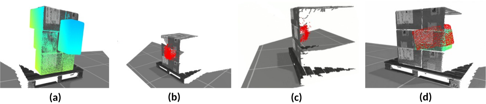
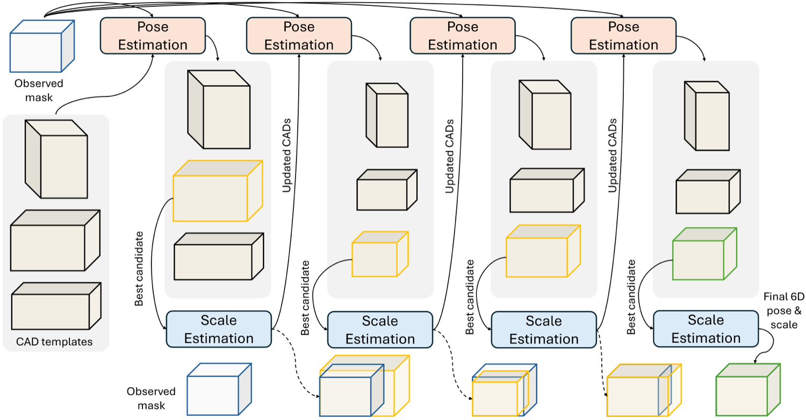
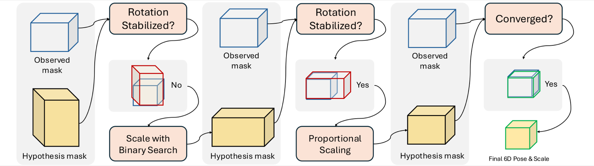
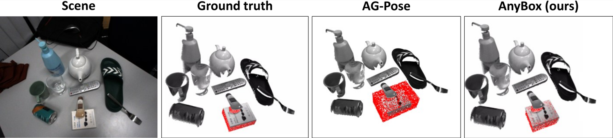
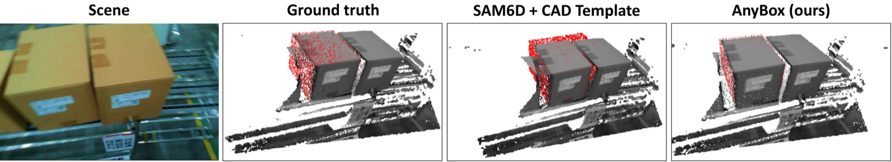
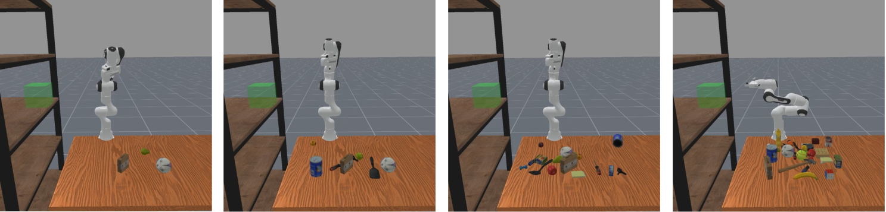
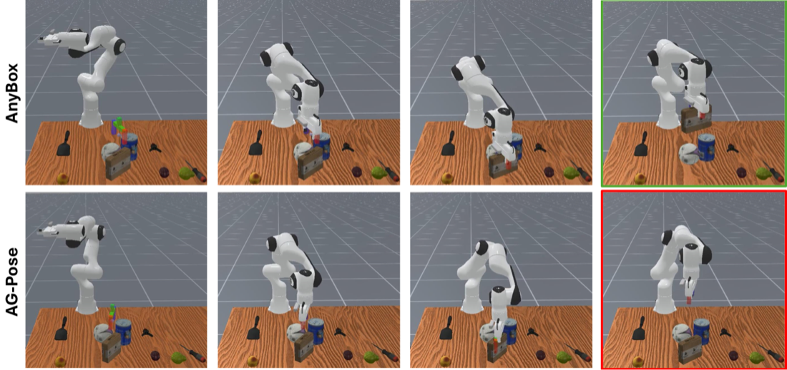

Summary
Recovers both the 6D pose and the 3D dimensions of box-shaped objects from a single RGB-D view, with no CAD model for any specific instance.
Abstract
Recovering the 9D pose of objects, both their 6D pose and 3D dimensions, under clutter and occlusion is a core requirement for warehouse automation, logistics, and manufacturing. Model-based methods are accurate but assume an instance-specific CAD model for every object, which is costly to maintain as inventories change. Model-free and category-level methods relax this assumption, yet they remain vulnerable to the symmetry, weak texture, and heavy occlusion that characterize stacked storage boxes, and they ignore the strong structural priors such scenes provide. We present AnyBox, an efficient zero-shot framework that exploits the geometric regularity of boxes to jointly recover pose and dimensions from a single RGB-D observation. Starting from a canonical category template, AnyBox alternates between pose and scale estimation, using the discrepancy between the reprojected template and the observed mask to drive a binary search over box dimensions. Two lightweight components make this practical: a depth-consistency filter that rejects the implausible hypotheses induced by box symmetry, and an early-stopping rule that replaces the remaining search with a single closed-form update. On public benchmarks and an in-house warehouse dataset, AnyBox improves detection AP by up to 36 points, more than doubling the previous best, and approaches instance-level pipelines that have access to ground-truth CAD models. These gains transfer downstream, raising success by 28% on a cluttered robotic box-shelving task.
Key Contributions
- An iterative two-stage procedure that alternates pose estimation and scale refinement, driving a binary search over box dimensions from the discrepancy between the reprojected template and the observed mask.
- A depth-consistency filter that rejects pose hypotheses whose reprojected mesh disagrees with observed depth, resolving the ambiguity that box symmetry induces.
- An early-stopping rule that replaces the remaining search with a single closed-form proportional scale update once rotation has converged.
- Evaluation on public benchmarks and an in-house warehouse dataset, plus a downstream box-shelving task on a real robot.
- Ablations isolating the contribution of scale estimation, depth filtering, and early stopping.
Approach



Results
- Improves detection AP by up to 36 points, more than doubling the previous best.
- Approaches instance-level pipelines that are given ground-truth CAD models.
- Raises success on a cluttered robotic box-shelving task by 28%.
- Early stopping cuts runtime by more than 75% with no loss in final pose accuracy.
HouseCat6D — 6D pose average precision (%)
| Model | IoU = 0.25 | IoU = 0.50 |
|---|---|---|
| FS-Net | 31.7 | 1.2 |
| GPV-Pose | 31.4 | 1.1 |
| NOCS | 43.3 | 6.5 |
| VI-Net | 44.8 | 12.7 |
| SecondPose | 54.5 | 23.7 |
| AG-Pose | 57.2 | 7.7 |
| AnyBox (ours) | 88.8 | 58.9 |
AnyBox more than doubles the best prior result at the stricter IoU = 0.50 threshold.




BibTeX
@article{ma2025anybox,
title = {AnyBox: Efficient Zero-Shot 9DoF Pose Estimation of Boxes for Robotic Manipulation},
author = {Yintao Ma and Sajjad Pakdamansavoji and Charles Eret and Rui Heng Yang and Xuan Zhao and Yingxue Zhang and Tongtong Cao and Amir Rasouli},
journal = {arXiv preprint arXiv:2511.15884},
year = {2025}
}